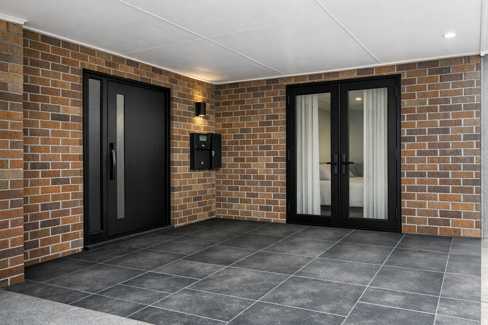
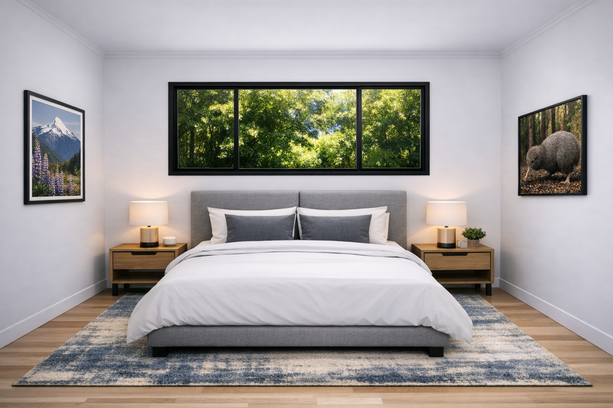
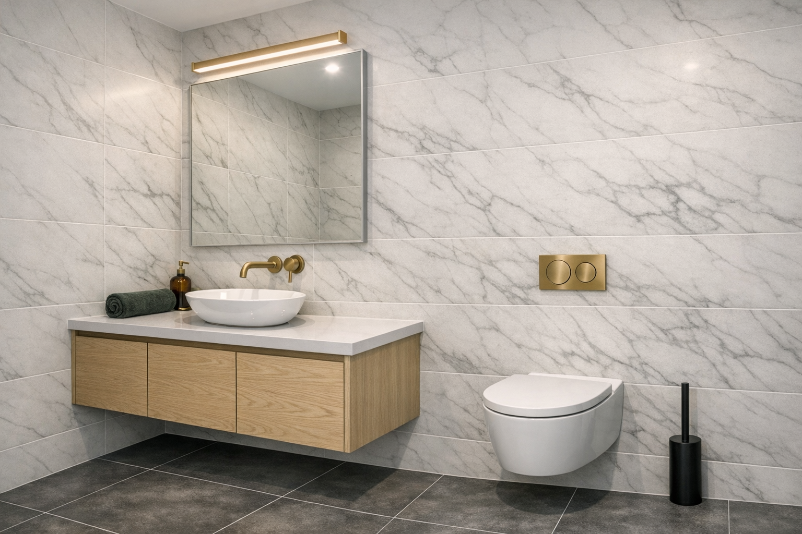
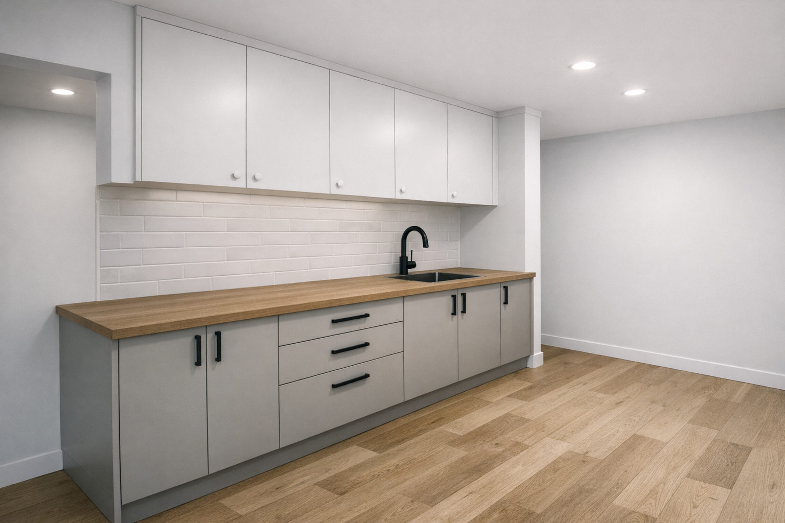
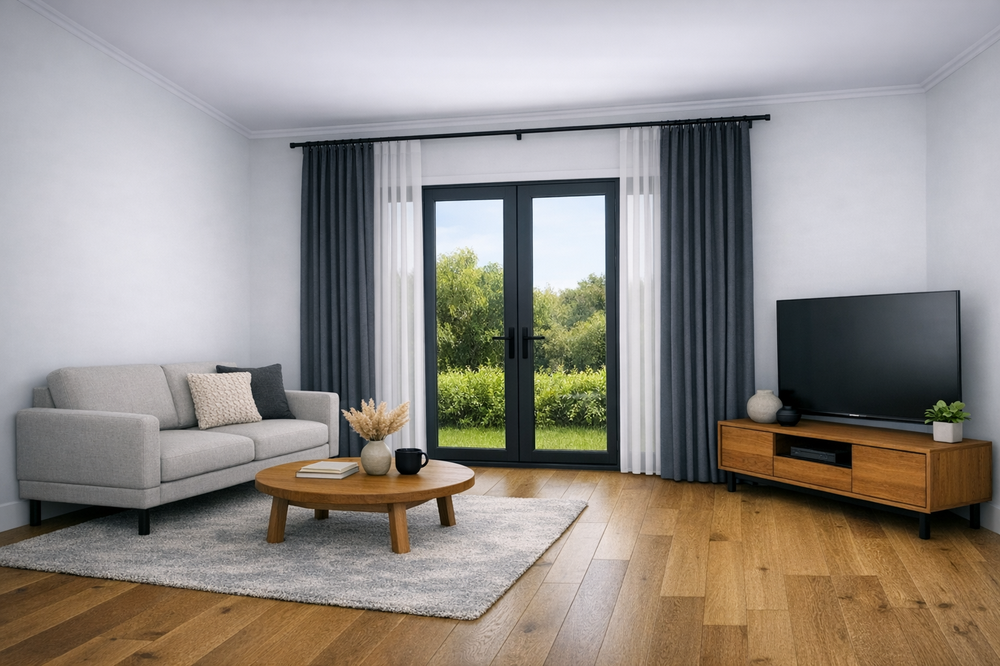
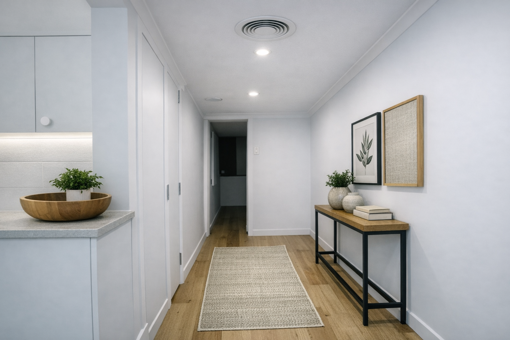
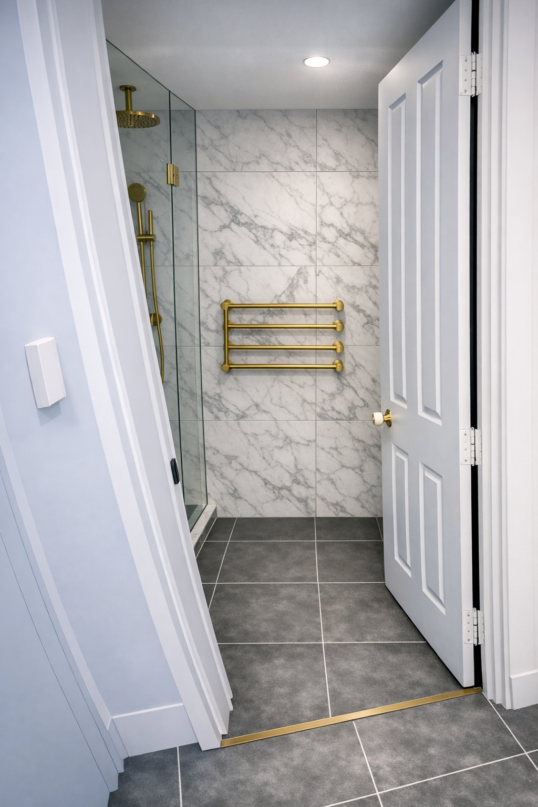
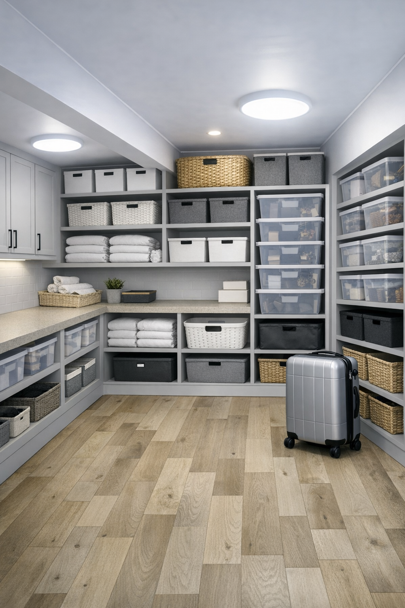

Design recommendations and rendered visions for transforming the ground floor into a modern, cohesive suite



Every decision reinforces the upper floor language: bright white walls, warm oak-tone LVP flooring, and matte black aluminium joinery throughout. No heritage detailing, no brass, no diamond panes.
Dampness must be diagnosed and remediated at source before any finishes go in. Waterproofing, insulation, and HRV extension are structural investments — not cosmetic ones.
Any floor tile removal requires a licensed asbestos assessment before work begins. This is non-negotiable and must be budgeted upfront — it determines the entire floor renewal scope.
Every new window and door should be black powder-coated aluminium, double-glazed, and thermally broken. This single choice ties the exterior to the interior and dramatically reduces condensation.
Black aluminium entry door with slim sidelight (left) and black aluminium French doors opening to the bedroom (right). Large-format dark porcelain paving. Recessed wall light between the doors. Warm brick retained as-is.
Replace with a black powder-coated aluminium entrance door. Slim profile, flush exterior face, with a full-height obscure-glass panel beside it. Double-glazed throughout. Brushed black D-pull bar — no visible locking cylinder on the face.
Remove the window, remove the brick half-wall below it, and install black aluminium French doors. Outward-opening to preserve bedroom floor space. Double-glazed clear glass with slim sightlines. Frame sits flush with the interior wall — no protruding timber surround.
Remove the octagonal terracotta tiles. Lay 600×600mm rectified porcelain pavers in a dark charcoal or slate tone — matte finish, R10 slip rated. The darker paving creates a strong base and frames the warm brick beautifully.
Remove the heritage coach lantern. Install a slim cylindrical wall-mounted up/down light in matte black between the two door openings — as shown in the render. Warm beam, IP65 rated for exterior use.
The warm orange-red brick is a character feature. With black joinery and dark paving it reads as a sophisticated contemporary NZ home. No painting, no rendering — just clean the mortar joints and let the contrast work.
The bedroom steps down internally — careful detailing needed at the French door threshold. A flush-finish aluminium threshold bar, with exterior paver and interior floor landing at complementary heights. Consider a slim external step if needed.
All new joinery should comply with NZ Building Code Clause H1 Energy Efficiency. For an Auckland coastal home, thermally broken aluminium frames are strongly recommended — standard aluminium conducts cold to the inside face, creating condensation that undermines the damp remediation effort.
Brands to ask about: Altherm, VANTAGE by APL, or TBA (Thermally Broken Aluminium) systems. All available in black powder coat as standard. For French doors: specify a multi-point locking system and a low-threshold sill for easy passage in and out.
Building consent required for removing the brick half-wall and creating the French door opening. Budget 6–8 weeks for consent processing. Engage an LBP-licensed contractor to prepare consent documentation.
Double-glazed units: minimum 6mm–air–12mm–air–6mm configuration. For the bathroom window replacement (glass blocks → proper window), specify an obscure or satin-acid-etched inner pane for privacy while maintaining light.
Low-E glass on the French doors and bedroom windows improves thermal performance at modest extra cost and reduces UV fading on furnishings — strongly recommended for a south-facing or shaded elevation.
Paving note: For the dark charcoal porcelain shown in the render, ask for full-body rectified porcelain at R10 slip rating. Darker tiles show dirt less and age better than light options in a covered-but-exposed porch environment.
A building consent will be required for removing the brick half-wall and creating the French door opening. Budget 6–8 weeks for consent processing and factor this into your timeline. Engage an LBP-licensed contractor or architect to prepare the consent documentation early — this is the longest lead item on the project.

Flat-panel white upper and lower cabinetry. Warm oak timber benchtop with undermount black sink. Matte black tapware. White subway tile splashback. Recessed downlights. Oak-look LVP flooring continuing from the hallway.
Flat-panel white cabinetry running the full length of the laundry wall — upper cabinets to ceiling height, lower cabinets to bench height. This matches the render and sets the template for the storage room fit-out to follow. Push-to-open or simple bar handles in matte black.
A warm oak-tone timber benchtop (solid timber or a high-quality laminate oak finish) runs the full length. This is the key warmth element that stops the white cabinetry feeling clinical. The undermount black sink sits cleanly in it.
A stainless undermount or matte black top-mount laundry sink. Matte black gooseneck mixer tap. This finish is consistent with the bathroom and entry hardware throughout the ground floor — one finish, everywhere.
Full-height white subway tile (75×150mm or 100×200mm) from benchtop to upper cabinets. Classic, easy to clean, adds texture without pattern. White grout for a seamless look — or very light grey grout if maintenance is a concern.
The oak-look LVP from the hallway should continue through the laundry without transition strips where possible. Lay before lower cabinets are installed so the floor runs under the kickboards.
Two recessed LED downlights in the ceiling — matching the hallway spec. The existing surface-mount fittings can be replaced at the same time as the cabinetry work. Warm white (2700K), dimmable if the circuit allows.
Flatpack options: Kaboodle at Bunnings is the most accessible flatpack system in NZ with a reasonable white finish range. IKEA SEKTION (if available in NZ at time of purchase) offers a similar system. For a tighter budget, these work well in a laundry where the doors don't need to be furniture-grade.
Mid-range: Polytec or a local cabinet maker using Laminex Polar White or similar. A local maker can cut to exact dimensions, accommodate the appliance positions precisely, and match the depth of the upper and lower cabinets to the render. Usually 3–4 weeks lead time.
Timber benchtop: For a genuine timber benchtop, look at NZ suppliers like Woodcraft or timber merchants in Auckland stocking NZ native or American oak. A 40mm solid oak bench is durable in a laundry and can be oiled for water resistance. Alternatively, a Laminex or Formica oak-look laminate over MDF is a practical lower-cost option that matches the render closely.
Appliance placement: Ensure the washing machine and dryer positions are confirmed before the cabinetry is ordered — the lower cabinet run needs to accommodate the appliance footprints with appropriate clearances. Tumble dryer exhaust ducting should be planned through the wall before lining.
Zone A — King bed with upholstered grey frame, matching oak bedside tables, warm rug. Wide black-framed window with garden view. NZ-themed wall art flanking the bed. Oak-look LVP flooring throughout.

Zone B — Compact sofa, round coffee table, timber media unit with TV. Black aluminium French doors opening to the porch with garden beyond. Sheer curtains on a black rod spanning the full door width. Morning light floods this corner.
Bed centred on the left wall between the window and rear corner. King upholstered frame in a grey or warm linen fabric. Matching oak bedside tables. Wall-mounted reading sconces in matte black. Large NZ art prints on either side of the bed.
Compact sofa and coffee table facing a wall-mounted TV, with the French doors behind flooding the corner with morning light. Oak timber media unit below the screen. Sheer curtains for privacy without blocking the garden connection.
The existing built-in is dated and the brass hardware is inconsistent with the new aesthetic. Removing it opens the wall and gives layout flexibility. Replace with a freestanding wardrobe (eg. PAX in white) or a new slim built-in on the rear wall once the French door layout is finalised.
Remove the terracotta tiles — asbestos test the adhesive layer first. Install the same warm oak-look LVP as the hallway. This single change transforms the room's feel more than almost anything else. Use a floating installation to allow for minor floor level variation.
Bright white on all walls. The wide black-framed window in the render acts as the feature element — the room doesn't need a feature wall when the window and art are this strong. Keep walls clean and bright to maximise light reflection.
Remove all existing wall sconces. Install 4–6 recessed LED downlights on two circuits: one for general light, one dimmable circuit above the bed zone for soft ambience. The hallway ceiling vent visible in the render shows the HRV outlet — replicate this in the bedroom ceiling.
As shown in the sitting zone render — sheer floor-length curtains on a slim black rod spanning the full French door opening. For the bed-side window: a blockout roller blind in white or warm linen, essential for a room with multiple aspects.
The render shows NZ-themed wall art — lupins/mountains on the left, kiwi on the right. Large format prints in slim black frames are an easy way to inject character and connect the room to its location. Look at prints from NZ photographers at Trade Me or specialty print shops.
With 5.1m of length, a king bed (1830×2030mm) fits comfortably on the left wall with room on both sides for bedside tables. The render shows the bed centred directly beneath the wide window — which is the strongest layout for this room, giving both occupants an equal view and balanced bedside table positioning.
Bed frame: An upholstered frame in mid-grey or warm charcoal fabric as shown in the render. Look at Plush, Early Settler, or freedom for mid-range options. The low-profile platform frame style shown reads well in a room with standard ceiling height.
Bedside tables: Matching solid oak bedside tables with a single drawer — as shown in the render. The dark-legged style (black hairpin or black angled legs) works well with the matte black window framing. Bedside lamps in a warm-toned fabric shade keep the ambience warm in the evenings.
Rug: The render shows a large blue-grey abstract rug under the bed — a strong pattern choice that anchors the sleeping zone and adds the one moment of colour in an otherwise neutral room. A 2.4×1.7m minimum is needed to sit fully under the bed with 300–400mm visible on all sides.
The right-hand side of the room as you enter — nearest the French doors and the most light-filled spot. The TV wall sits to the right as you enter alongside the entry hallway wall. The render shows a two-seat sofa oriented to face the TV, with the French doors behind flooding the zone with outdoor light.
Sofa: A compact two-seater (approximately 1.6–1.7m wide) in a warm grey or oatmeal fabric. The render shows a low-arm contemporary style that sits comfortably under the curtain rod height. Look at early Settler, King Living, or freedom — all have compact options suited to this zone.
Coffee table: A round solid timber coffee table as shown in the render — approximately 700mm diameter. The round form softens the zone and makes the space feel less like a second living room and more like a relaxed reading nook. Timber tone to match the bedside tables and media unit.
TV & media unit: Wall-mount the TV (65") and place a low timber media unit below it — the render shows a warm oak sideboard style at approximately 400mm high. Keep cable management clean by running cables in the wall cavity before the wall is repainted. This unit also provides practical storage for remotes, gaming controllers, etc.
The HRV duct into this room is the single highest-value intervention for day-to-day liveability. Ground floor rooms in Auckland brick homes are prone to condensation on windows in winter — the HRV eliminates this and removes the damp smell that builds up without air circulation. Plan duct runs before the ceiling is lined or painted. The render shows a circular ceiling vent — this is the target.

White walls, oak LVP flooring, recessed downlights and HRV ceiling vent. White flat-panel doors with simple bar handles. Slim console table in black and timber on the right wall with art above. Natural fibre runner rug. The laundry cabinetry visible on the left sets the fit-out standard.
The existing doors are acceptable in form — the key change is replacing any dated hardware with simple matte black bar handles or lever sets throughout. If replacing doors, specify flat-panel MDF in white to match the render. The door to the bathroom and bedroom should match.
A narrow console table (approximately 1.0–1.2m wide, 300mm deep) in a black steel frame with a timber shelf — as shown in the render. This fits comfortably against the right wall without narrowing the corridor. Adds a moment of warmth and a place for decorative objects.
The render shows two framed pieces above the console — a botanical print in a thin black frame and a natural textured panel in a timber frame. This pairing of black and warm timber frames works well with the hallway palette and echoes the bedroom art approach.
A slim natural fibre runner rug (approximately 600mm × 1600mm) in a warm oatmeal or cream tone — as shown in the render. Defines the corridor, adds softness underfoot, and protects the LVP in the high-traffic path. Look at jute or wool-blend woven runners.
The render shows two recessed downlights and a circular HRV ceiling vent — this is the target. Upgrade the existing surface-mount fittings to recessed LED downlights if ceiling construction allows. Ensure the HRV duct run is planned through this ceiling before any ceiling work is done.
The render shows a small potted plant on the laundry bench visible from the hallway. This is a low-effort, high-reward touch that makes the whole floor feel lived-in and cared for. A compact pothos, peace lily, or ZZ plant suits the lower-light conditions of a ground floor hallway.
Skirting boards: Ensure the skirting profile and colour is consistent throughout the hallway and into the new storage room and bedroom. The existing white skirting is appropriate — replicate it exactly in any newly lined areas. A consistent 90mm square-edge MDF skirting in gloss white is the right spec.
Door reveals: The door frames and architraves should all be in the same white as the walls and skirting — a single flat paint colour throughout. Remove any timber-stained or heritage-profile architraves and replace with a simple 60mm square-edge MDF profile if needed.
HRV coordination: The hallway ceiling is the natural route for HRV duct runs to reach the bedroom, bathroom, and storage room. Plan the duct layout with the HRV installer before any ceiling work is done — adding ducts after the fact means cutting open ceilings that have just been painted. The circular ceiling vent in the render is a standard HRV outlet — confirm positioning with the installer to avoid it clashing with the downlight positions.
Flooring transition: Ensure the LVP transitions cleanly at the entrance to the bedroom (currently terracotta tile) and into the storage room. Use flush aluminium reducer strips at all thresholds — no raised or visible plastic trim pieces. The render shows a seamless floor run — this is achievable if all tiles are removed before LVP is laid.

Frameless glass shower screen. Large-format marble-look wall tiles. Brushed gold overhead rose and hand-held shower set. Brushed gold heated towel rail on the back wall. Dark charcoal floor tile. Brushed gold threshold strip at the door.
Wall-hung oak timber vanity with white vessel basin. White engineered stone benchtop. Brushed gold wall-mounted tap. Slim mirror with brushed gold light bar above. Wall-hung toilet with brushed gold flush button. Dark charcoal floor tile. Marble-look tile to full ceiling height.
The renders show brushed gold tapware and fittings — a warmer and more distinctive choice than the matte black originally suggested. The brushed gold pairs exceptionally well with the marble-look tile and the oak vanity timber. It also references the warm brick tones of the exterior. If you'd prefer to stay with matte black to match the rest of the ground floor hardware, simply substitute throughout — the tile and vanity selections work with either finish.
Strip everything: tiles (wall and floor), toilet, vanity, green laminate benchtop, glass block window, heated towel rail, and grab rails. Only the shower recess location and existing plumbing rough-in positions should remain as reference points.
Apply a full waterproofing membrane (Schluter Kerdi or equivalent) to all wet zone walls and the floor before any tile is laid. Take the membrane 200mm up every wall, not just in the shower. Must be signed off before tiling begins.
Full-height tiles in 600×300mm or 600×1200mm format in a white marble-look with grey veining — as shown in the renders. Rectified edges, 2mm joint, white grout. The marble-look tile adds character without the cost or maintenance of real stone.
Large-format dark charcoal tiles (600×600mm) as shown in the renders — a bold contrast against the white marble-look walls. R10 slip rated. This floor choice is more dramatic than the original mosaic suggestion but the renders show it works very well. Consider in-floor heating under this tile.
Wall-hung vanity in warm oak timber as shown in the render — approximately 900mm wide with a white vessel basin sitting on an engineered stone benchtop. The oak timber is the warmth element that stops the marble-and-charcoal palette from feeling cold.
Basin tap (wall-mounted), shower rose and rail, toilet flush button, towel rail — all in brushed gold as shown. Look at Methven's Aio or Kiri range, or Nero's brushed gold range available through Reece NZ. One finish, everywhere — do not mix with chrome or matte black in this bathroom.
The existing frameless glass shower screen may be sound — have a glazier inspect it. Replace the shower rose with a brushed gold fixed overhead square rose plus adjustable hand-held on a slider rail. Recess a small niche (200×300mm) into the shower wall for bottles — tile to match the wall.
The glass block wall is the primary moisture trap — remove entirely. Replace with a slim double-glazed obscure-glass fixed or top-hung window in black aluminium. This is critical for eliminating the damp trap and getting real ventilation into the space.
Wall-hung pan with concealed cistern as shown in the render — this requires a suitable wall construction but gives a cleaner look and makes floor cleaning significantly easier. Brushed gold flush button. Caroma Liano II or similar NZ-stocked range.
A single mirror (approximately 700×900mm) with a slim brushed gold LED light bar above — as shown in the render. This is cleaner than a full-width backlit mirror and more consistent with the brushed gold fitting direction. One recessed downlight inside the shower recess (IP65 rated).
Wall tile: The renders show a large-format Carrara or Calacatta marble-look porcelain — a grey-veined white tile that reads as luxurious without the cost of real marble. In NZ, look at the Tile Depot, Surface Gallery, or Ceramica ranges for "marble-look large format rectified porcelain." Specify a honed (not polished) finish for the wall tile — polished shows water marks and is harder to maintain.
Floor tile: Large-format dark charcoal (600×600mm) as shown — a full-body porcelain in an anthracite or dark basalt tone. This needs to be R10 slip rated for bathroom use. The contrast against the white marble walls is dramatic and works well in a small bathroom — dark floors read as a larger floor plane, not a smaller one.
Grout: For the marble-look wall tiles, use a warm white or very light grey grout — not bright white, which ages quickly to yellow. For the dark charcoal floor tiles, use a mid-grey grout that matches the tile tone. Use epoxy grout in the shower recess — more mould resistant and longer lasting than cement-based grout.
In-floor heating: An electric mat system (150W/m²) laid under the floor tiles connected to a thermostat timer is strongly recommended for this bathroom. The dark charcoal tile will hold heat well once warm but will feel cold underfoot on a winter morning without it. Brands: Warmup, Nuheat, or Devi — all available in NZ through electrical wholesalers or Mitre 10 Trade. Budget approximately $400–700 for the mat plus $150–250 for thermostat installation.

Three-wall shelving system in warm grey. Open adjustable shelves for baskets, bins, linen, and clear containers. Lower sections accommodate luggage upright. Ceiling flush lights (matching existing kitchenette fittings). Oak-look LVP floor continuing from the hallway. The existing laundry cabinetry visible on the upper left.
Remove the tiled benchtop, inset sink, tapware, and all plumbing. Cap supply and waste lines neatly in the wall — a licensed plumber must do this. Remove the wood-panelled wall linings entirely. Inspect the block wall behind for moisture and mould before any new lining goes on.
Strip back to the block wall. Treat any mould with a mould-kill solution, allow to dry completely, then reline with moisture-resistant plasterboard on a slight batten to create an air gap. Do not reline until the wall has had 4–6 weeks to dry out with a dehumidifier running.
As shown in the render — a three-wall adjustable shelving system in warm grey or white. Open shelving (not closed cabinetry) makes it easier to quickly find and access items. Lower shelves at 400–500mm high accommodate upright suitcases. Upper shelves at standard 300mm spacing for baskets, bins, and containers.
The render shows the room fully organised with matching wicker baskets, grey fabric bins, and clear plastic containers. This level of organisation makes a storage room genuinely functional. Invest in a matching set of storage containers — look at IKEA SKUBB, Kmart baskets, or similar — before moving items back in after the reno.
The diamond-pane leaded hatch that opens from the kitchenette needs a decision. If it connects to the garage, it could be repurposed as a pass-through — remove the leaded glass, fit a simple flush-panel door on each side. If unused, close the opening with matching blockwork or plasterboard and finish flush with the wall.
The render shows the existing oval ceiling flush fittings retained — these are functional and can stay. Add LED strip lighting on the undersides of the upper shelf brackets so the lower shelves are well lit. A motion-sensor switch on the LED strip is a practical addition for a windowless room.
IKEA BOAXEL: The most accessible adjustable shelving system in NZ for this purpose. Available in white, mounts to wall rails, fully adjustable, and has a deep enough shelf (40cm standard) for most storage needs. Can span three walls with a single product family. The white finish is clean and will work in the repainted space.
Elfa (The Container Store / local specialist): A more premium adjustable shelving system with better load ratings and a wider accessory range. Available in NZ through specialty storage retailers. The warm grey finish shown in the render is closer to an Elfa Décor finish than IKEA. Worth the premium if the room will hold heavy items like tool containers or appliances.
Custom timber shelving: For the lower sections (suitcase storage), a local joiner can build fixed-height shelves at exactly the right clearance for your specific luggage. This is more expensive but more practical for oversized items and gives a higher quality result at the lower level where the shelving takes the most wear.
Floor: The LVP flooring continues from the hallway into this room — lay it before the shelving is installed so it runs under the shelf base. This makes future reconfigurations easier and gives a cleaner look. The render shows a running bond LVP matching the hallway — confirm the flooring spec is consistent before ordering.
Moisture note: Even after remediation, this room should have a dehumidifier running seasonally. Do not store anything moisture-sensitive (important documents, electronics, clothing) in unsealed containers on the lower shelves. Use closed-lid plastic bins at the lower levels.
The former kitchenette wood panelling is likely the most significant hidden moisture risk on the entire ground floor. Do not reline it without first allowing the exposed block wall to dry out fully — 4 to 6 weeks minimum after the panelling is removed, with a dehumidifier running in the space. Test for residual moisture with a pin-type moisture meter before boarding over. This step cannot be rushed.